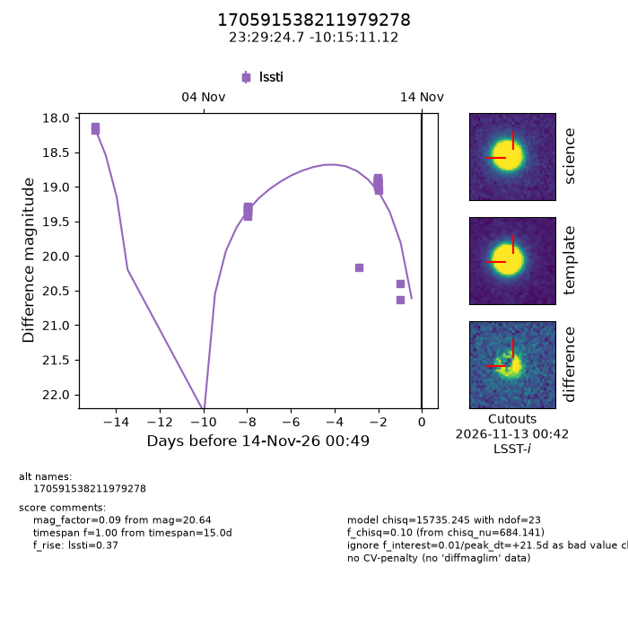
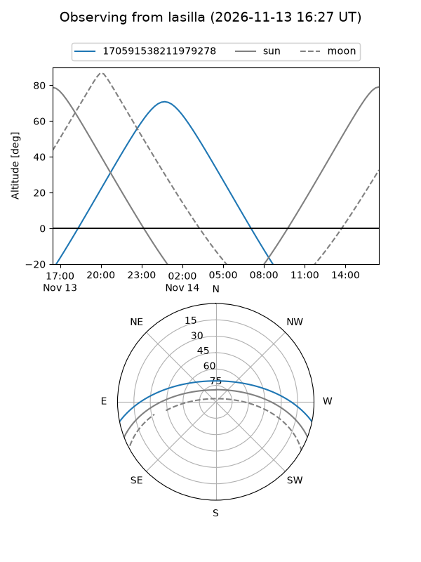
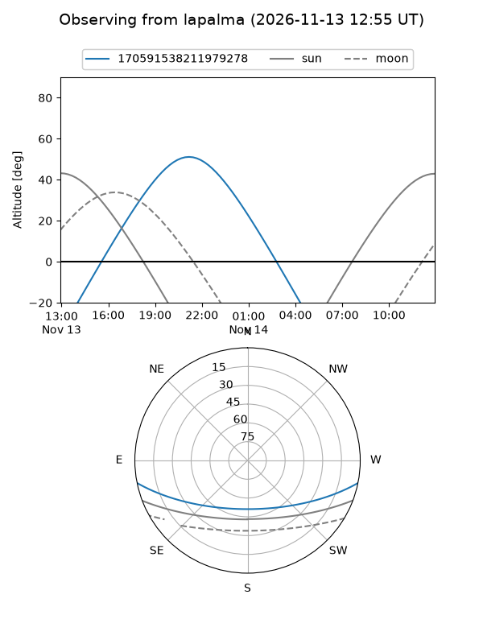
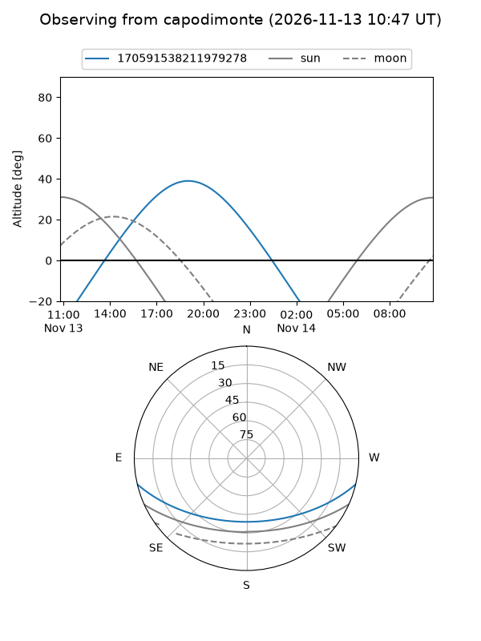
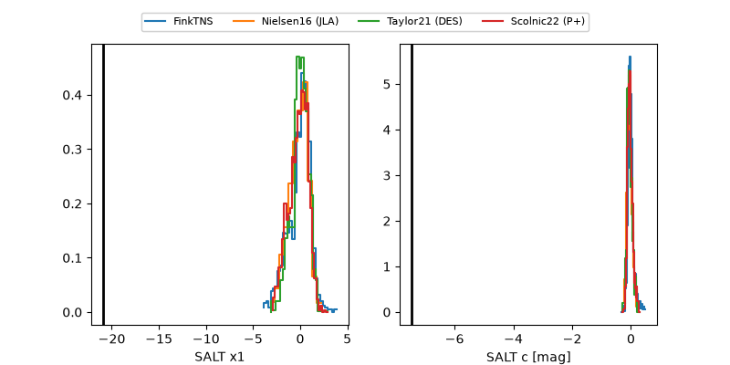

170591538211979278
Target 170591538211979278 at 2026-11-14 00:51
Aliases and brokers:
FINK-LSST: lsst.fink-portal.org/170591538211979278
Lasair-LSST: lasair.lsst.ac.uk/objects/170591538211979278
ALeRCE-LSST: lsst.alerce.online/object/170591538211979278?survey=lsst
Direct TNS query: direct search
alt names
170591538211979278 (broker_lsst,fink_lsst)
Coordinates:
equatorial (ra, dec) = 352.3528,-10.25309
equatorial (HMS+DMS) = 23:29:24.68,-10:15:11.12
galactic (l, b) = (70.1525,-64.34838)
Flags:
peak dt: +21.5
Photometry:
last lssti=20.64
28 lssti detections
Lightcurve

Visibility



Additional plots
